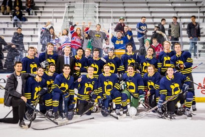

Jake has been Playing hockey since the age of 5. Here are some images that show how his career has progressed
Jake started his travel hockey career at the age of 8. The organization was the Westchester Vipers. He chose the number 9 after his favorite player Gordie Howe, aka "Mr. Hockey"
These images show Jake in the high school stage of his career.
Jake Currently plays hockey at the University of Michigan for the Hillel Hockey Team. While this may be a glorified version of beer leauge, it is a great was to continue the sport he loves while participating in religious events within the Jewish community at Michigan.